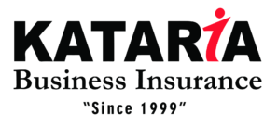
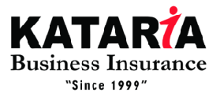

Antarleen partners with entrepreneur-led and family-managed organizations to build structured, scalable and self-reliant businesses.
Let’s IntrospectAntarleen Consultancy & Advisory Services is a management consulting firm focused on enabling organizations to build structured, scalable, and self-reliant organizations. We work with entrepreneur-led and family-managed businesses that have reached a stage where growth requires more than intent and effort — it requires clarity, discipline, and well-aligned systems.
Our purpose is “To Enable people, Develop their Perspectives through Introspections.” We believe that sustainable progress begins with constant introspection — by understanding where the organization truly stands, what is holding it back, and what needs to change to move forward confidently.
Through this approach, we help entrepreneurs move from reactive decision-making to structured and deliberate execution.
At Antarleen, our belief system is rooted in the idea of Paristhiti vs Manasthiti. While external circumstances and market conditions (Paristhiti) are often beyond control, an organization’s internal clarity, mindset, and readiness (Manasthiti) determine how effectively those situations are handled.
By strengthening internal alignment — between people, processes, and values — we enable organizations to respond to challenges with utmost clarity and confidence rather than uncertainty.
Our values guide the way we work with every client. We are deeply client-centric, believing in a win-within-win philosophy where outcomes are meaningful for all stakeholders. We uphold ethical conduct, transparency, and trust in every engagement, and focus on building long-term relationships rather than transactional assignments.
Above all, we encourage continuous introspection — because lasting organizational strength comes from the willingness to reflect, learn, and evolve.
What differentiates Antarleen is not just what we do, but how we work with organizations. Our consulting approach goes beyond recommendations and focuses on real, on-ground implementation that becomes part of the organization’s way of working.
We follow a structured consulting methodology called BOTA – Build, Operate, Transfer, and Audit. This approach ensures that systems and processes are not only designed, but are also implemented, stabilized, and sustained within the organization over time.
We work closely with the entrepreneur and key stakeholders to design customized systems, processes, and structures aligned with the organization’s goals and realities.
These are practical, easy-to-adopt frameworks created specifically for the business — not generic templates.
This phase focuses on implementation. We support teams in executing the designed systems and handhold them through the initial stages.
The objective is to ensure clarity, discipline, and consistency, bridging the gap between intent and action.
Once systems stabilize, ownership is gradually transferred to internal leaders and teams.
The goal is to create a self-reliant organization that does not depend on external consultants for day-to-day functioning.
Through structured reviews and audits, we assess adherence, effectiveness, and outcomes.
This enables corrective actions and continuous strengthening of systems over time.
Structured HR systems aligned with business goals.
Know More →Embedding purpose, values and long-term direction.
Know More →Institutionalising SOP-driven execution.
Know More →Translating vision into executable strategy.
Know More →Building independent decision-makers.
Know More →Creating predictable sales performance.
Know More →Data-driven accountability frameworks.
Know More →Aligning authority with responsibility.
Know More →Making businesses franchise-ready.
Know More →

 

Detailed Organizational Scrutiny Exercise (D.O.S.E) is an in-depth diagnostic engagement designed to assess goals, capabilities, processes, challenges and value systems across the organization.